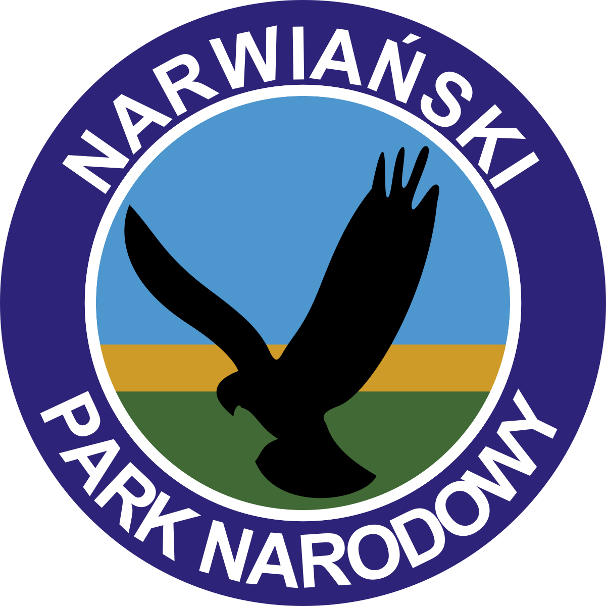

Narwiański Park Narodowy
Park został utworzony w roku 1996 i swoją mocą chroni obszar o powierzchni 68,10 km². Znajduje się w północno-wschodniej Polsce, w województwie podlaskim, nieco na zachód od Białegostoku. Symbolem Narwiańskiego Parku Narodowego jest błotniak stawowy. Jest to gatunek dużego ptaka drapieżnego z rodziny jastrzębiowatych. W parku można spotkać siedliska wielu zagrożonych ptaków jak choćby bielika zwyczajnego i bojownika bataliona. Na obszarze parku rzeka Narew przybiera charakter rzeki anastomozującej, czyli płynie równocześnie kilkoma, dość krętymi korytami, o stałym przebiegu. Dominuje tutaj roślinność bagienna. Dla zwiedzających udostępniono kładki przez bagna Istnieje również możliwość wyruszenia na szlaki kajakowe.